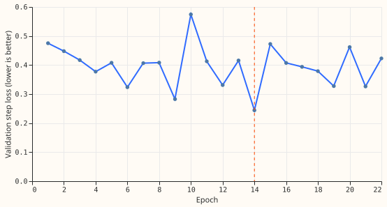
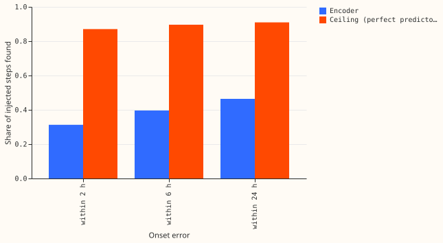

Can a small neural network learn to find and size a shifted block in 14 days of power readings, and how long does one fit take?
This page is interim and unaudited, and its result is a weak null. A small neural network (the history encoder, 86,747 parameters) was trained once, for 69 seconds, on injected shifts in 14 days of power readings at the fold 2026-01 Primaries. The encoder did not pass the pre-registered proxy for the plan's kill rule (c). The fit used one seed and a noisy validation block of 401 windows, so the result does not rule out a learned repair.
Method
- Question. Experiment 507 showed that a perfect repair of the three lag readings improves the lag correction. This experiment asks whether a small neural network can learn to find and size injected shifts in the 672 half-hours (14 days) of readings, and how long one fit takes.
- Data. Experiment 507's generator, with temporary shifts (family A), genuine level changes (family B), and hard negatives drawn three times as often (family D). One window is a Primary and a day. The two input channels are the surprise (reading minus the ERA5 and CAMS lagless median, over the Primary's residual spread) and the median standardised within the window. Windows touching a labelled event are dropped. Test windows have origins in January 2026; training windows end 68 days before the refit, the validation block (30 days) sits before a 24-day embargo.
- Encoder. A dilated convolution stem, 168 two-hour tokens, two transformer layers with a learned relative-position bias, and heads for the step probability, the step size, and whether the step in force at the newest reading is genuine. The losses were a positive-unlabelled step loss with a size loss (weight 0.5), a genuine-head cross-entropy (0.2), and a total-variation penalty (1e-3). Adam at 2e-3, batches of 128, a fresh generator world each epoch.
- Checks. The four checks P1 to P4 and their thresholds were written into the plan before the fit. A candidate step is a half-hour where the mean estimated step over the next 4 half-hours differs from the mean over the previous 4 by at least 0.5 spreads.
Results

Terms. A spread is a Primary's residual standard deviation (the reading minus the lagless median, which is the forecast of a network that sees no power input). A candidate step is defined in the Method. The ceiling is the score of a predictor that outputs the injected step. A temporary shift (family A) ends; a genuine change (family B) persists. The signed-MW six are the Primaries that report signed megawatts and the MVA-only eight report apparent power only.
Scores are on the 372 test windows (origins in January 2026) in injected worlds 200 to 202. Intervals resample whole Primaries (13 in the test month). "Ceiling" is the same score for a perfect predictor that outputs the injected step, read through the same candidate rule.
| Check | Threshold (fixed before the fit) | Result | Outcome |
|---|---|---|---|
P1: best epoch of the validation step loss (L_u, the pre-registered measure) |
8 or later | 14 (L_u 0.244) |
Passed on that measure only: the loss moved between 0.24 and 0.57 from epoch to epoch, and the plain cross-entropy beside it was lowest at epoch 4 |
| P2: error at the three lags on rows a step touches | under half of the unrepaired error | 0.446 against 0.988 spreads (45%) | Passed |
| P2: error added on rows no step touches | under 0.1 of the mean injected step | 0.144 | Failed (no interval computed) |
| P3: steps found within 6 hours | at least 70% of the ceiling (0.896) | 0.396 (0.365 to 0.434), 44% of the ceiling | Failed |
| P4: planted-step precision at a 2% rate | at least 0.3 | 0.165 (0.07 at the six, 0.40 at the eight) | Failed on the pooled value (no interval computed; the groups straddle the threshold, so the pooled failure is not firm) |

- The encoder found a third of the steps within 2 hours. The shares found within 2, 6, and 24 hours were 0.313, 0.396, and 0.464, against ceilings of 0.870, 0.896, and 0.910. The ceiling is below 1 because a step under 0.5 spreads is never a candidate. At the signed-MW six the share within 2 hours was 0.297 (4 Primaries), and at the MVA-only eight 0.326 (7 Primaries).
- Size was roughly right when a step was found. The median relative size error among found steps was 0.25, and 50% were within 25%.
- The false-flag rate depends on which median is used. On test windows with no injection it was 0.032 (0.003 to 0.085). On the validation block's real windows it was 0.297. A possible cause (not tested) is that 78% of test half-hours take their median from the table's post-refit module, while training and validation use cross-fitted medians, so the test surprise is quieter.
- Raising the candidate threshold trades recall for precision. At 1.5 spreads the planted-step precision was 0.334, but only 7% of steps were found within 2 hours. The thresholds of 0.5, 0.75, 1.0, and 1.5 spreads gave precisions of 0.165, 0.188, 0.246, and 0.334. P4 was fixed at 0.5.
- The genuine-change head was weak. Its area under the ROC curve was 0.64 on 373 labelled window-world pairs (windows with a step in force at the newest reading, pooled over the three worlds). The generator makes 75% of steps in force at the newest reading genuine.
- Cost. One fit took 69 seconds (22 epochs of 16,384 windows, about 3 seconds each), against a cap of 2 hours.
Outcome against the plan
| Item | Outcome |
|---|---|
| Kill rule (c), clause 2: validation step loss stops falling before epoch 10 | Not fired (best epoch 14), but the curve is noisy |
| Kill rule (c), clause 1, read through the proxy P2 to P4 | The proxy failed (P2 on the clean-row guard, P3, P4) |
| Consequence in the plan | The neural encoder stops unless the neural Discuss session overrules |
Limits
- A weak null. One seed, a 69-second fit, and a validation block of 401 windows (the step loss swung by more than a factor of two between epochs) cannot separate "the encoder cannot learn this" from "this fit was too small". The thresholds were fixed before the fit.
- The total-variation test of experiment 507 is also weak. Its tuning hit the edge of the grid (weight 16 and tau 5, the weakest repair), so this experiment cannot say how a learned encoder compares with a well-tuned non-learned repair.
- The noise curve was not run, by the maintainer's standing instruction, so the first clause of rule (c) is read only through the proxy.
- The lab setting flatters detection, and the test month holds 4 Primaries at the six (D5 and D16 are excluded by labelled events) and 7 at the eight.
- NGED's event labels are incomplete, so the real windows used for the false-flag rate hold events that no label covers.
- Training prevalence. 19% of the valid training half-hours are positives, against at most a few per cent in real data, so the step probability is calibrated to a busier world than the real one.
What the next experiment should answer
Attempt 2 (below) asked whether a longer, three-seed fit with a larger validation block, a lower learning rate, and a flag threshold chosen on validation reaches the thresholds. It did not, so the line closes unless the neural Discuss session overrules.
Attempt 2 (design fixed before it ran)
A second, bounded attempt changes the fit in six ways and reads the same four checks. The maintainer approved it, and the lag-free results of experiment 511 (the lag-free network beats the lagged network below about 2 days, and the gap sits at days 5 to 10) weaken the case for a lag encoder. The changes: 3 seeds (each with its own network initialisation and training worlds); a validation block of 130 days (1,558 windows) in place of 30; early-stopping worlds 150 to 152 and separate threshold worlds 160 to 162; a learning rate of 5e-4; epochs of 32,768 windows; and early stopping after 10 epochs. The flag threshold is chosen per seed on the validation block alone, as the grid value (0.5, 0.75, 1.0, or 1.5 spreads) that maximises planted precision times recall within 2 hours, and is written to a file before any test window is scored. P1 to P4 are read unchanged at the frozen threshold, per seed, with the spread over seeds. The cap is 0.5 GPU-hours for the fits together (the scoring passes are not counted).
- Tuned design. The test windows and worlds 200 to 202 were read in attempt 1, and the changes above were chosen afterwards, so a pass is a pass of a design tuned after that read-out.
- Best epoch. A loss counts as better only if it is 0.5% below the best, so "best epoch" means the last such improvement. A best epoch of 8 to 12 is reported as inconclusive for P1.
- Seeds. The three seeds share one training pool, one validation block, and one set of test windows, so the spread over seeds understates the uncertainty. If the seeds disagree on P2 to P4, the page says so and does not pick a seed.
- A second null closes the line. The neural Discuss session decides what follows.
Attempt 2 results
All three seeds fail P2, P3, and P4, and the seeds agree. The result is a second null, so the line of work on a learned history encoder closes. The scores below are at each seed's frozen threshold on the same 372 test windows and worlds 200 to 202. The three fits took 332, 164, and 287 seconds (783 seconds, 0.22 GPU-hours, inside the 0.5 GPU-hour cap, and no fit aborted).
| Seed | Frozen threshold (spreads) | Best epoch (P1) | Repaired / unrepaired lag error (P2, below 0.5) | Error on untouched rows / injected step (P2, below 0.1) | Found within 6 h / ceiling (P3, at least 0.7) | Planted precision at 2% (P4, at least 0.3) |
|---|---|---|---|---|---|---|
| 0 | 0.5 | 59 (pass) | 0.478 (pass) | 0.312 (fail) | 0.463 / 0.896 = 0.52 (fail) | 0.025 (fail) |
| 1 | 0.5 | 19 (pass) | 0.440 (pass) | 0.243 (fail) | 0.404 / 0.896 = 0.45 (fail) | 0.067 (fail) |
| 2 | 1.5 | 41 (pass) | 0.477 (pass) | 0.314 (fail) | 0.078 / 0.466 = 0.17 (fail) | 0.197 (fail) |
- P1 passes in every seed. Seed 0 reached the 60-epoch cap with its best epoch at 59, so its validation loss was still falling when the fit stopped.
- The repair shrinks the lag error but adds error elsewhere. The ratio of repaired to unrepaired lag error is 0.44 to 0.48, but the encoder also puts an error of 0.24 to 0.31 of the mean injected step on rows where no step touches a lag, three times the allowed 0.1.
- The seeds differ in how they fail. Seeds 0 and 1 chose the lowest threshold and found 46% and 40% of injected steps within 6 hours, with false-flag rates of 0.277 and 0.089 on real test windows. Seed 2 chose 1.5 spreads, found 8%, and flagged 0.5% of real windows. At the threshold the validation block chose, no seed gets near the 0.3 planted precision.
- The genuine-change head is weak. Its ranking area under the ROC curve is 0.63, 0.66, and 0.64 across the seeds (373 labelled window-world pairs).
- Limits. The seeds share one training pool, one validation block, and one set of test windows, so the spread over seeds understates the uncertainty. The design was tuned after attempt 1 read the same test windows. The noise curve was withheld by the maintainer's standing instruction, so the proxy is not the noise-curve region itself. The tuning of the total-variation repair in experiment 507 hit the edge of its grid (weight 16, tau 5, the weakest repair), so that test was weak as well.